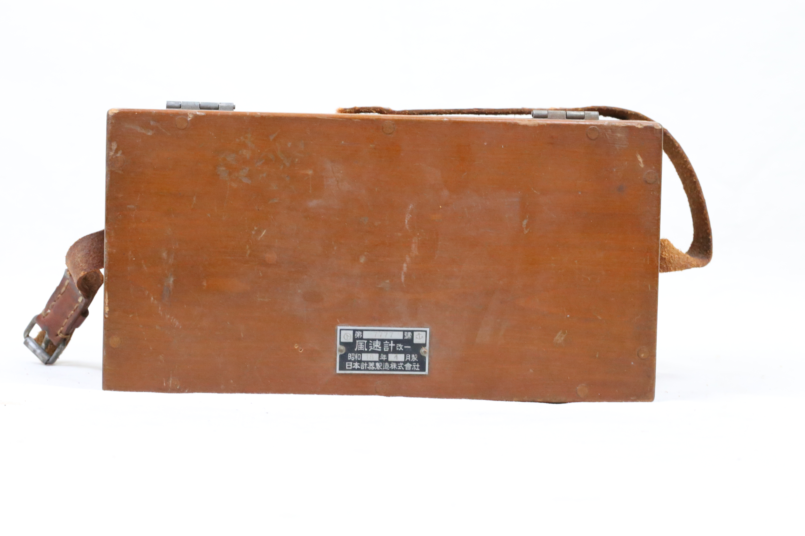
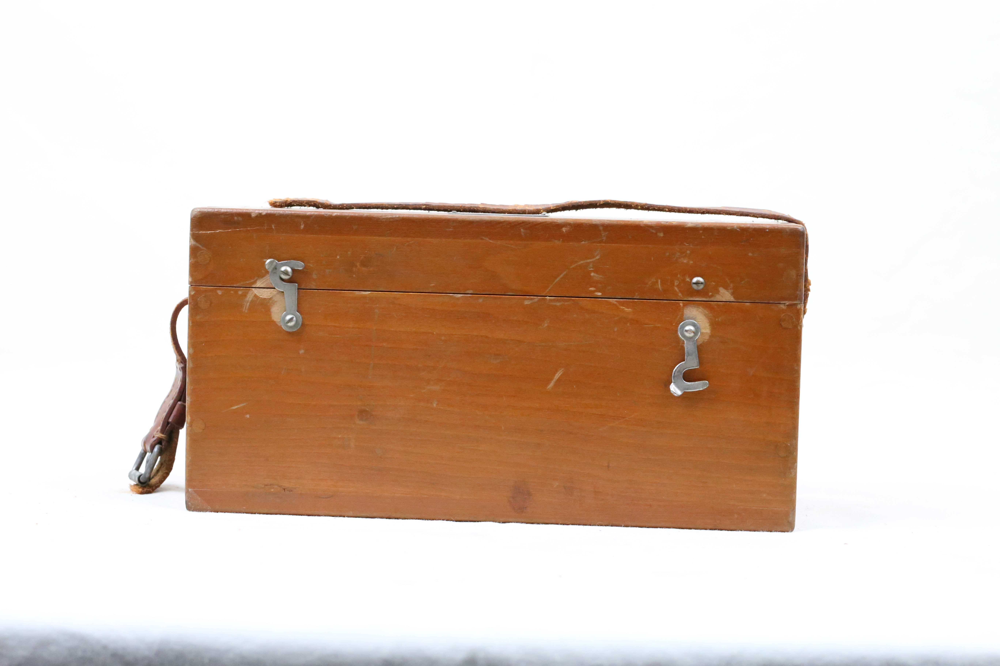

Mechanical Cup-Type Wind Speed Meter. WWII-era Japanese military anemometer used for measuring wind speed in aviation and artillery during the early 1940s.
(with the wooden box)
This anemometer is a mechanical wind speed measuring instrument built in Showa 18 (1943), likely for military or meteorological use during World War II by the Japanese Imperial forces. The instrument, known in Japanese as a 風速計 (fūsokukei), is housed in a protective wooden casing and includes a dial face calibrated to indicate wind velocity. Devices like this were critical in military operations involving flight takeoff/landing, naval gunnery, and weather prediction. Its light, industrial design reflects wartime manufacturing priorities for durability, reliability, and portability. There is no information about the manufacturer and therefore I suppose that it was likely produced by a company contracted by the Japanese military, with similarities to European precision instruments of the same era.
(the anemometer itself)
The anemometer is a compact four-cup, circular, dial-based metal instrument with visible Japanese kanji inscriptions and an aged industrial finish, enclosed in a sturdy wooden storage box with hinged lid and letter string carrier.
This anemometer measures wind speed in meters per second (m/s), displayed via a mechanical dial.
This instrument operates as a mechanical anemometer, using rotating cups that spin in response to wind. The rotational velocity is transferred through a set of gears to a pointer that reads wind speed on a calibrated dial. During World War II, such instruments were vital for aircraft takeoff planning, artillery targeting, weather forecasting, and naval navigation. Its compact form allowed field use by meteorological units and forward observation posts. The analog nature of the device meant it required no electricity, which was advantageous in mobile and battlefield environments.
The physics of this device relies on the relationship between wind force and rotational motion. As wind moves the cups or propeller, it exerts a force proportional to the cube of wind speed. This force causes rotation, which is then translated via precision mechanical gearing into a needle movement. The angular velocity is calibrated against wind speed through pre-determined scales, accounting for drag coefficients and resistance. This relies on principles from fluid dynamics, torque, and mechanical conversion of motion, especially Newton’s Second Law and rotational kinematics.